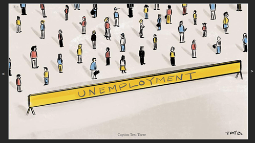
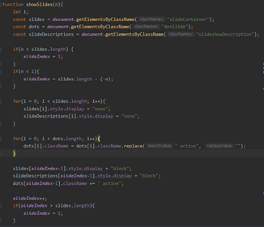
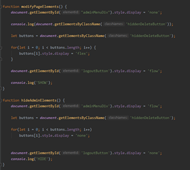

2. Main Page
Aceasta pagina are un rol informativ privind situatia Romaniei la categoria de someri. Prima sectiune, cea mai evidenta si importanta, o reprezinta slide-urile. In cadrul acestora, se vor difuza poze sugestive, fiecare avand o descriere aferenta intr-un placeholder. Aceste placeholdere detin informatii privind problemele majore ale Romaniei care au dus la statistici socante.
Acestea au fost implementate folosind javascript.
PlaceHolder-ul de informatii se schima si el odata cu slide-urile, afisand mereu textul aferent slide-ului curent.
De asemenea, tot in mainPage se afla si o sectiune de News. Acestea sunt stocate intr-o baza de date, fiind manipulate doar de catre administrator.
